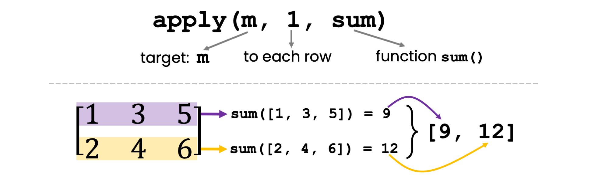

![]()
# Create a matrix
m = matrix(c(1, 2, 3, 4, 5, 6), nrow = 2)
print(m) [,1] [,2] [,3]
[1,] 1 3 5
[2,] 2 4 6
Ready for a quick dive into the wonderful world of functional programming? Whether you’re a seasoned programmer or just starting your journey with R for some data science project, getting a grasp on functional programming will not only add a new weapon to your data science arsenal but also make your code more efficient and readable. So, without further ado, let’s get started!
Functional programming, put simply, is a programming style that mimics mathematical functions. You might be thinking, “Isn’t all programming based on functions?” Well, yes, but functional programming takes this concept to the next level. It’s all about structuring your code as a series of reusable, interconnected functions, each doing one specific task and doing it well. In this blog post, we’ll focus on functions as arguments to other functions.
Now, why should you, an R programmer, care about this? Well, R might not be a pure functional programming language, but it does offer strong functional programming capabilities. Mastering them can make your code more effective and attractive. Plus, functional programming principles can help us eliminate redundant code and make our scripts more maintainable.
It’s a bit like building with Lego blocks. Each block (or function) has its own shape and purpose, and you can connect them in various ways to create whatever you want. And the best part? You can disassemble and reassemble them without affecting the individual blocks!
Let’s start with a powerful feature that many data science workflows heavily benefit from: passing functions as arguments to other functions. This concept might seem a bit tricky at first, but once you get the hang of it, you’ll see how it adds a whole new level of flexibility and efficiency to your code.
In R, functions are “first-class citizens”, meaning they can be treated just like any other object or data type. They can be assigned to variables, stored in lists, and most importantly for our current discussion, passed as arguments to other functions. This feature allows us to create more general, reusable functions and reduce code repetition.
apply() functionOne of the most common examples of passing a function as an argument is using the apply() function in R. The apply() applies a function to the rows or columns of a matrix or data frame. Here’s how it works.
We will first set the stage and initialize a \(2 \times 3\) matrix m:
# Create a matrix
m = matrix(c(1, 2, 3, 4, 5, 6), nrow = 2)
print(m) [,1] [,2] [,3]
[1,] 1 3 5
[2,] 2 4 6Now, suppose we want to calculate the sum of each row in m. We could do that manually via:
# Initialize a vector to store the row sums
row_sums = numeric(nrow(m))
for (i in seq_len(nrow(m))){
row_sums[i] = sum(m[i, ])
}
print(row_sums)[1] 9 12But this code is pretty clunky for such a simple task and, more importantly, hard to maintain. What if we wanted to compute the sum of each column? We would need to
row_sums to col_nums both at the initialization and within the for loop;i so that it iterates over [1, ..., ncol(m)]; and finallym[, i].I don’t know about you, but I would probably miss at least one of those adjustments.

apply function to calculate row sums.So let’s rewrite row_sums as a one-liner via functional programming. We use the function apply(X, MARGIN, FUN), which works as follows:
X: The object that we operate on. In our case, we want to apply some function on parts of the matrix m, so X = m.MARGIN: You can select whether you want to apply the function to each row (MARGIN = 1), to each column (MARGIN=2), or to rows and columns combined (MARGIN=c(1,2)). We want to compute the sum of each row, so we choose MARGIN = 1.FUN: The actual function that you want to apply across the rows or columns. In our case, it’s the sum function.# Apply the sum function to the rows of the matrix
row_sums = apply(m, MARGIN=1, FUN=sum)
print(row_sums)[1] 9 12If you want to take your first steps towards functional programming, go ahead and try those two exercises.
Change the example code so that it calculates the column sums of the matrix m instead of the row sums. The answer should be [3, 7, 11].
Change the example code so that calculates the mean of each column in m instead of the sum. The answer should be [1.5, 3.5, 5.5].
FUN – ignore missing valuesSuppose we have a matrix of data, and some of the values are missing, as represented by NA:
# Create a matrix
m = matrix(c(1, 2, NA, 4, 5, 6), nrow = 2)
print(m) [,1] [,2] [,3]
[1,] 1 NA 5
[2,] 2 4 6If we simply execute the code from the previous example, we will get NA in the row with a missing value:
# Compute row sums (without handling NA)
row_sums = apply(m, MARGIN=1, FUN=sum)
print(row_sums)[1] NA 12If we think about it, it’s not surprising: Behind the scenes, we execute sum(c(1, NA, 5)) and that’s NA. If you are a bit into data science with R, you might know that sum(c(1, NA, 5), na.rm=TRUE) would ignore the NA value and return the sum of the non-NA values, which is 6. So we need a way to funnel na.rm through the apply function into sum. Lucky for us, there is a straightforward way. We can simply add any additional arguments in our call to apply as follows:
# Compute the sum of each row, removing NA values
row_sums <- apply(m, 1, sum, na.rm=TRUE)
print(row_sums)[1] 6 12In this example, we’re passing the sum function as an argument to the apply function as usual. But we’re also passing na.rm=TRUE as an additional argument to the sum function. This means that when apply calls the sum function for each row, it’s actually calling sum(row, na.rm=TRUE). Perfect!
Suppose you are writing some machine learning algorithm that aims to predict the true value for four test cases. But your algorithm tries to quantify some notion of uncertainty around that prediction. Therefore, it outputs three values for each case:
# Define a true vector and a predicted matrix
true <- c(1, 3, 2, 2)
predicted <- matrix(c(1, 2, 3, 2, 3, 4, 1, 3, 3, 2, 2, 2), nrow = 4)
for (i in seq_along(true)){
cat("True:", true[i], "| predictions:", predicted[i, ], "\n")
}True: 1 | predictions: 1 3 3
True: 3 | predictions: 2 4 2
True: 2 | predictions: 3 1 2
True: 2 | predictions: 2 3 2 Now, you want to quantify the error for each case with some metric to know how good the set of predictions is for each case. In this example, we’ll first use the Mean Squared Error (MSE) as our metric. MSE is a common metric for regression problems, measuring the average squared differences between the true and predicted values. Here, it will quantify the error between the set of predictions \(\hat{y}_1, \ldots, \hat{y}_N\) and the true value \(y^*\) for a single case, \(MSE=\frac{1}{N}\sum\limits_{i=1}^N(y^*-\hat{y}_i)^2\).
# Define a function to compute the Mean Squared Error
mse <- function(true, predicted) {
return (mean((true - predicted) ** 2))
}If we want to know how well the algorithm predicts the first test case, we can simply call:
mse(true[1], predicted[1, ])[1] 2.666667This is the prediction error for the first case, and we could compute such an error for every case in the test set. Now, let’s create a function that takes the entire true vector, the entire predicted matrix, and an error metric function as arguments. It will apply the error metric function to the true vector and each column of the predicted matrix. It might seem like a bit of an overkill for now, but it will be worth it very soon:
# Create a function that computes the error between a true vector and each column of a predicted matrix
compute_errors <- function(true, predicted, error_func) {
# Initialize a vector to store the errors
errors <- numeric(ncol(predicted))
# For each column in the predicted matrix
for (i in seq_len(ncol(predicted))) {
# Compute the error between the true vector and the current column
errors[i] <- error_func(true, predicted[,i])
}
return(errors)
}Finally, let’s use our compute_error function to compute the MSE between the true vector and each column of the prediction matrix:
# Use the custom function to compute the MSEs
errors <- compute_errors(true, predicted, error_func=mse)
print(errors)[1] 0.50 1.75 1.25In this example, we compute the MSE between the true vector and each column of the predicted matrix. We achieve this by passing the mse function as an argument to the compute_errors function. This demonstrates how passing functions as arguments can make your code more flexible and modular, enabling you to easily switch between different error metrics. It was a bit of upfront work, but it reduces the actual call to compute the errors down to a single line of code.
But this functional programming paradigm really shines when we want to replace the error function that we apply! Let’s compute the Mean Average Error (MAE) instead of the MSE. No problem with our functional programming solution. After all, the concrete error function just an argument to our compute_errors wrapper that implements all the logic. We just define the mae function \(\frac{1}{N}\sum\limits_{i=1}^N | y^*-\hat{y}_i|\) and plug it into the compute_errors wrapper:
# Define a function to compute the Mean Absolute Error
mae <- function(true, predicted) {
return (mean(abs(true - predicted)))
}
# Use the custom function to compute the MAEs
errors <- compute_errors(true, predicted, error_func=mae)
print(errors)[1] 0.50 1.25 0.75Boom, we compute the MAE between each case from the true vector and each corresponding set of predictions from the predicted matrix. All we had to do is pass the mae function as an argument to the compute_errors function. Most importantly, we did not need to make any changes to the compute_errors function – instead, we just provided a drop-in replacement for the error_func that compute_errors applies internally.
Adjust the MAE example code so that NA values are ignored and the mean is computed with respect to all non-NA values.
{purrr}For me personally, one of the most fascinating aspects of functional programming in R is the concept of ‘partial functions’. This concept allows us to create new functions from existing ones by pre-filling some of the arguments. Think of it as a customizable tool that you can tweak to fit your specific needs.
In part 2 of this blog post series, we’ll be taking a closer look at partial functions in R. We’ll understand how they work, why they’re useful, and how you can use them to make your R code even more efficient, elegant, and re-usable.
So, stay tuned for the next blog post. If you want to be notified via email when the next blog post is published, consider subscribing to my slow mailing list The Training Loop below.
Cheers!

Do you enjoy my blog? Subscribe here to get notifications and updates (it's free!):